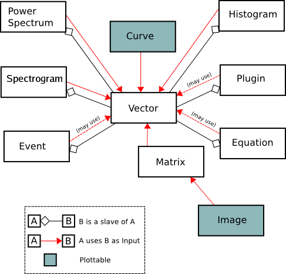

Working With Data
We will call Data Objects in Kst all objects which appear in the Data Manager. There are ten main kinds of data object in Kst. The following diagram illustrates the relationships between the different types:

As can be seen in the diagram, the only truly “plottable” data objects are curves and images. Many data objects contain slave vectors which can be plotted using curves, however — so these data objects are effectively plottable as well.
The usefulness of the Data Objects concept in Kst is that they can be tied together to create pipelines. An Event Monitor object, for instance, can take the output of another object as its input. Updates to objects in the pipeline propagate automatically. This is one of the key features which makes Kst powerful for realtime plotting.
The Data Manager provides a central location for adding, deleting, and modifying all of the data objects used in Kst. It can be accessed from ->.
The panel on the left side of the Data Manager can be used to quickly create new data objects. The button automatically deletes Data Objects which are not Used Data Objects. The and buttons allow you to selectively edit or remove particular objects. The button exits the Data Manager.
You can also create new data objects which are based on vectors by right clicking on the corresponding vector and choosing one of the options. If you select a curve, on the other hand, then you have the option to add it to an existing plot.
For its list of Data Objects, the Data Manager displays several pieces of information. These are described below:
The name of the data object, unique among the set of data objects with the same type.
The type of the data object determines how it is created and what its options are. Type can be one of: Data Vector, Curve, Equation, Histogram, Spectrum, Plugin, Event Monitor, Matrix, Image, or Spectrogram.
This field gives the status of the data object. If there is a check mark in the Used column of a data object, then some other object in Kst is dependent on it.
The number of elements in the data object.
A summary of the data object's key parameters, dependent on its type.
If you want to quickly find a vector among many items in the data manager, you may just type part of its name in the search field. Then, the data manager will respond by listing only those items which contain the entered text within their names.
You can create new Data Objects using either the left panel in the Data Manager, or the menu.
When you are creating a new data object, you may enter a unique name to identify the object. If you do not enter a custom name then a unique name will be automatically generated.
To delete a data object you must use the Data Manager. Note that if the Used column for a data object has a check mark then some other data or view object in Kst has a dependency on it. Depending on the strength of these dependencies, Kst will prompt before an object is deleted. If, for example, other objects have critical dependencies on the one which you are attempting to delete, Kst will ask if you would like to delete these other objects as well. Some dependencies are listed below:
Plots are not critically dependent on the plottable objects which they contain, so if a plotted object is deleted Kst will automatically remove it from all plots, without prompting.
All data objects which use a particular data vector must be deleted before the data vector itself can be deleted.
All children of a parent data object must be unused before the parent data object can be deleted.
After a sequence of deletions and removals of plottable data objects from plots, you may find that there are numerous unused data objects displayed in the Data Manager. To quickly remove these objects, you can click the button.


Would you like to make a comment or contribute an update to this page?
Send feedback to the KDE Docs Team